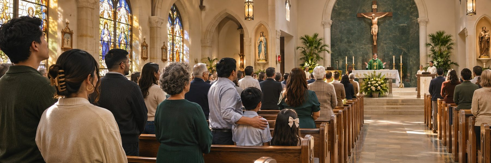
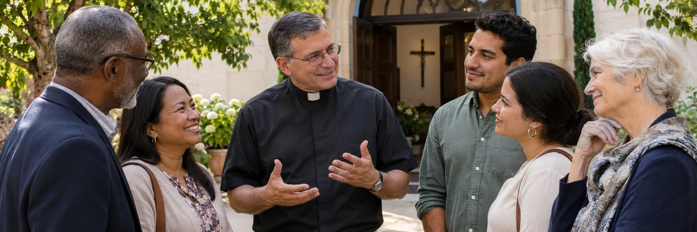

Why bring it
Why bring this experience to your parish
A familiar gesture, a passage heard at Mass, or a question about Church teaching can open the door to a fuller understanding of Catholic faith.
I Love Being Catholic begins with those recognizable experiences and helps participants follow the connections among belief, worship, prayer, and daily choices.
Adult formation is an essential part of parish life, not simply an occasional course. I Love Being Catholic offers a shared framework for that continuing work. Its units return to central questions rather than treating doctrine, Scripture, and Catholic practices as unrelated subjects. The companion materials give local leaders a common foundation for teaching and conversation.


A welcome
A welcome for adults with questions
The program welcomes adults with varied levels of familiarity with Catholic faith. No prior course of study is assumed. Longtime parishioners and adults seeking a fresh understanding are invited to bring their questions, including questions shaped by difficult experiences of Church life.
What “love” means here“Love” expresses an invitation to informed belonging, with room for honest reflection.
Learning aims
The learning aims are practical
Prayer and guided conversation help participants consider how what they learn takes shape beyond the gathering.
Find reliable sources for further learning
Understand more clearly the meaning of Catholic practices
Ready for your parish
Ready for your parish to use
The complete program brings together everything below. Your parish can choose the setting that best serves its people and begin with materials prepared for that purpose.

An invitation to begin
Bring together adults who want to understand their faith more fully, including those who are unsure where to begin. Choose a format that suits your community, invite people warmly, and make room for their questions.